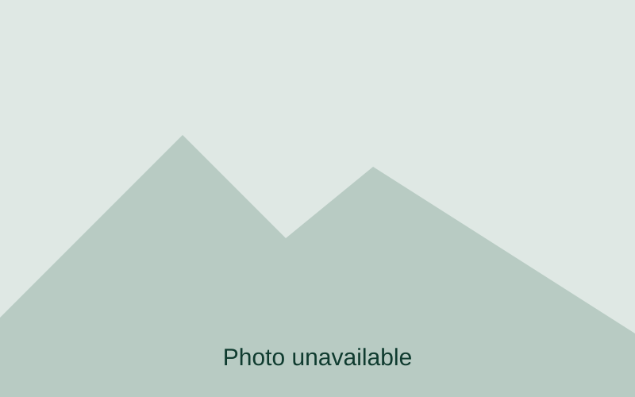

1. Destination2. Package3. Plan4. Stay & Gear5. Confirm

About this place
📅 Best season
Local costs (jeeps, tickets, guide)
Estimate from
Basic package + local costs + return coach fare from Islamabad, per person.